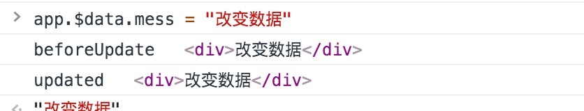

<!DOCTYPE HTML>
<html lang="zh-CN">
<head><meta name="generator" content="Hexo 3.8.0">
    <!--Setting-->
    <meta charset="UTF-8">
    <meta name="viewport" content="width=device-width, user-scalable=no, initial-scale=1.0, maximum-scale=1.0, minimum-scale=1.0">
    <meta http-equiv="X-UA-Compatible" content="IE=Edge,chrome=1">
    <meta http-equiv="Cache-Control" content="no-siteapp">
    <meta http-equiv="Cache-Control" content="no-transform">
    <meta name="renderer" content="webkit|ie-comp|ie-stand">
    <meta name="apple-mobile-web-app-capable" content="王永杰的网络日志">
    <meta name="apple-mobile-web-app-status-bar-style" content="black">
    <meta name="format-detection" content="telephone=no,email=no,adress=no">
    <meta name="browsermode" content="application">
    <meta name="screen-orientation" content="portrait">
    <!-- 自定义视频托管 -->
    <script src="https://player.polyv.net/script/polyvplayer.min.js"></script>
    <link rel="dns-prefetch" href="http://wangyongjie.top">
    <!--SEO-->

    <meta name="keywords" content="Vue">


    <meta name="description" content="1. 关于 beforeUpdate 的执行时间的问题问题描述：beforeUpdate 不应该是在数据渲染之前执行的吗？可是打印出结果却是已经渲染完毕的。
代码演示：1234567891011...">


<meta name="robots" content="all">
<meta name="google" content="all">
<meta name="googlebot" content="all">
<meta name="verify" content="all">

    <!--Title-->


<title>Vue.JS学习中遇到的问题 | 王永杰的网络日志</title>


    <link rel="alternate" href="/atom.xml" title="王永杰的网络日志" type="application/atom+xml">


    <link rel="icon" href="/favicon.ico">

    


<link rel="stylesheet" href="/css/bootstrap.min.css?rev=3.3.7">
<link rel="stylesheet" href="/css/font-awesome.min.css?rev=4.5.0">
<link rel="stylesheet" href="/css/style.css?rev=@@hash">


    


    <script>
        var _hmt = _hmt || [];
        (function() {
            var hm = document.createElement("script");
            hm.src = "https://hm.baidu.com/hm.js?f42ffe5fed856accbf91820f137dab46";
            var s = document.getElementsByTagName("script")[0];
            s.parentNode.insertBefore(hm, s);
        })();
    </script>


    

</head>

</html>
<!--[if lte IE 8]>
<style>
    html{ font-size: 1em }
</style>
<![endif]-->
<!--[if lte IE 9]>
<div style="ie">你使用的浏览器版本过低，为了你更好的阅读体验，请更新浏览器的版本或者使用其他现代浏览器，比如Chrome、Firefox、Safari等。</div>
<![endif]-->

<body>
    <header class="main-header" style="background-image:url(http://snippet.shenliyang.com/img/banner.jpg)">
    <div class="main-header-box">
        <a class="header-avatar" href="/" title="wangyongjie">
            
        </a>
        <div class="branding">
        	<!--<h2 class="text-hide">Snippet主题,从未如此简单有趣</h2>-->
            
                <h2> 我是谁 我在哪 我在做什么 </h2>
            
    	</div>
    </div>
</header>
    <nav class="main-navigation">
    <div class="container">
        <div class="row">
            <div class="col-sm-12">
                <div class="navbar-header"><span class="nav-toggle-button collapsed pull-right" data-toggle="collapse" data-target="#main-menu" id="mnav">
                    <span class="sr-only"></span>
                        <i class="fa fa-bars"></i>
                    </span>
                    <a class="navbar-brand" href="http://wangyongjie.top">王永杰的网络日志</a>
                </div>
                <div class="collapse navbar-collapse" id="main-menu">
                    <ul class="menu">
                        
                            <li role="presentation" class="text-center">
                                <a href="/"><i class="fa "></i>首页</a>
                            </li>
                        
                            <li role="presentation" class="text-center">
                                <a href="/categories/前端/"><i class="fa "></i>前端</a>
                            </li>
                        
                            <li role="presentation" class="text-center">
                                <a href="/categories/后端/"><i class="fa "></i>后端</a>
                            </li>
                        
                            <li role="presentation" class="text-center">
                                <a href="/categories/工具/"><i class="fa "></i>工具</a>
                            </li>
                        
                            <li role="presentation" class="text-center">
                                <a href="/webnav/"><i class="fa "></i>导航</a>
                            </li>
                        
                            <li role="presentation" class="text-center">
                                <a href="/archives/"><i class="fa "></i>时间轴</a>
                            </li>
                        
                            <li role="presentation" class="text-center">
                                <a href="/message/"><i class="fa "></i>留言板</a>
                            </li>
                        
                            <li role="presentation" class="text-center">
                                <a href="/categories/生活/"><i class="fa "></i>生活</a>
                            </li>
                        
                            <li role="presentation" class="text-center">
                                <a href="/about/"><i class="fa "></i>关于</a>
                            </li>
                        
                    </ul>
                </div>
            </div>
        </div>
    </div>
</nav>
    <section class="content-wrap">
        <div class="container">
            <div class="row">
                <main class="col-md-8 main-content m-post">
                    <p id="process"></p>
<article class="post">
    <div class="post-head">
        <h1 id="Vue.JS学习中遇到的问题">
            
	            Vue.JS学习中遇到的问题
            
        </h1>
        <div class="post-meta">
    
        <span class="categories-meta fa-wrap">
            <i class="fa fa-folder-open-o"></i>
            <a class="category-link" href="/categories/前端/">前端</a>
        </span>
    

    
        <span class="fa-wrap">
            <i class="fa fa-tags"></i>
            <span class="tags-meta">
                
                    <a class="tag-link" href="/tags/Vue/">Vue</a>
                
            </span>
        </span>
    

    
        
        <span class="fa-wrap">
            <i class="fa fa-clock-o"></i>
            <span class="date-meta">2019/07/19</span>
        </span>
        
    
</div>
            
            
    </div>
    
    <div class="post-body post-content">
        <h2 id="1-关于-beforeUpdate-的执行时间的问题"><a href="#1-关于-beforeUpdate-的执行时间的问题" class="headerlink" title="1. 关于 beforeUpdate 的执行时间的问题"></a>1. 关于 <code>beforeUpdate</code> 的执行时间的问题</h2><h3 id="问题描述："><a href="#问题描述：" class="headerlink" title="问题描述："></a>问题描述：</h3><p><code>beforeUpdate</code> 不应该是在数据渲染之前执行的吗？可是打印出结果却是已经渲染完毕的。</p>
<h3 id="代码演示："><a href="#代码演示：" class="headerlink" title="代码演示："></a>代码演示：</h3><figure class="highlight html"><table><tr><td class="gutter"><pre><span class="line">1</span><br><span class="line">2</span><br><span class="line">3</span><br><span class="line">4</span><br><span class="line">5</span><br><span class="line">6</span><br><span class="line">7</span><br><span class="line">8</span><br><span class="line">9</span><br><span class="line">10</span><br><span class="line">11</span><br><span class="line">12</span><br><span class="line">13</span><br><span class="line">14</span><br><span class="line">15</span><br><span class="line">16</span><br><span class="line">17</span><br><span class="line">18</span><br><span class="line">19</span><br></pre></td><td class="code"><pre><span class="line"><span class="tag">&lt;<span class="name">div</span> <span class="attr">id</span>=<span class="string">"app"</span>&gt;</span></span><br><span class="line">    <span class="tag">&lt;<span class="name">p</span>&gt;</span>&#123;&#123;mess&#125;&#125;<span class="tag">&lt;/<span class="name">p</span>&gt;</span></span><br><span class="line"><span class="tag">&lt;/<span class="name">div</span>&gt;</span></span><br><span class="line"><span class="tag">&lt;<span class="name">script</span>&gt;</span><span class="undefined"></span></span><br><span class="line"><span class="undefined">    // 生命周期</span></span><br><span class="line"><span class="undefined">    var app = new Vue(&#123;</span></span><br><span class="line"><span class="undefined">        el: "#app",     // 挂载点 </span></span><br><span class="line"><span class="undefined">        data: &#123;</span></span><br><span class="line"><span class="undefined">            mess:"wangyongjie"</span></span><br><span class="line"><span class="undefined">        &#125;,</span></span><br><span class="line"><span class="xml">        template: "<span class="tag">&lt;<span class="name">div</span>&gt;</span>&#123;&#123;mess&#125;&#125;<span class="tag">&lt;/<span class="name">div</span>&gt;</span>",  // 差值表达式</span></span><br><span class="line"><span class="undefined">        beforeUpdate:function()&#123;  // 数据在发生改变，还没重新渲染之前</span></span><br><span class="line"><span class="undefined">            console.log("beforeUpdate",this.$el)</span></span><br><span class="line"><span class="undefined">        &#125;,</span></span><br><span class="line"><span class="undefined">        updated:function()&#123; // 重新渲染之后</span></span><br><span class="line"><span class="undefined">            console.log("updated",this.$el)</span></span><br><span class="line"><span class="undefined">        &#125;</span></span><br><span class="line"><span class="undefined">    &#125;)</span></span><br><span class="line"><span class="undefined"></span><span class="tag">&lt;/<span class="name">script</span>&gt;</span></span><br></pre></td></tr></table></figure>
<h3 id="输出结果："><a href="#输出结果：" class="headerlink" title="输出结果："></a>输出结果：</h3><p></p>
<h3 id="相关解释："><a href="#相关解释：" class="headerlink" title="相关解释："></a>相关解释：</h3><blockquote>
<p>据官方介绍<br><code>beforeupdate</code>:数据更新时调用，发生在虚拟 <code>DOM</code> 重新渲染和打补丁之前。<br><code>updated</code>:由于数据更改导致的虚拟 <code>DOM</code> 重新渲染和打补丁，在这之后会调用该钩子。<br>分析原因:<br>1.之前的 <code>log</code> 打印的是虚拟 <code>dom</code> 的内容<br>2.至于虚拟 <code>dom</code>,我的理解是<code>vue2</code>为了提高性能用了一种类似 <code>dom</code> 树缓存的介质,具体官网链接请看:  <a href="https://cn.vuejs.org/v2/guide/render-function.html#" target="_blank" rel="noopener">https://cn.vuejs.org/v2/guide…</a>节点、树以及虚拟-<code>DOM</code></p>
</blockquote>
<h3 id="参考文章："><a href="#参考文章：" class="headerlink" title="参考文章："></a>参考文章：</h3><ol>
<li><a href="https://segmentfault.com/q/1010000011521681" target="_blank" rel="noopener">vue2 为什么beforeUpdate时的$el 和$data与updated时的一样</a></li>
<li><a href="https://www.bbsmax.com/A/pRdBaxKD5n/" target="_blank" rel="noopener">摘抄详细的VUE生命周期</a></li>
</ol>
<h2 id="2"><a href="#2" class="headerlink" title="2."></a>2.</h2><p><br><strong>本文作者</strong>：王永杰<br><strong>本文地址</strong>： <a href="http://wangyongjie.top/blog/57509/">http://wangyongjie.top/blog/57509/</a> <br><strong>版权声明</strong>：本博客所有文章除特别声明外，均采用 <a href="http://creativecommons.org/licenses/by-nc-sa/3.0/cn/" target="_blank" rel="noopener">CC BY-NC-SA 3.0 CN</a> 许可协议。转载请注明出处！</p>

    </div>
    
        <div class="reward" ontouchstart>
    <div class="reward-wrap">赏
        <div class="reward-box">
            
                <span class="reward-type">
                    <b>支付宝打赏</b>
                </span>
            
            
                <span class="reward-type">
                    <b>微信打赏</b>
                </span>
            
        </div>
    </div>
    <p class="reward-tip">一分也是爱</p>
</div>


    
    <div class="post-footer">
        <div>
            
                转载声明：商业转载请联系作者获得授权,非商业转载请注明出处 <a href="http://wangyongjie.top" target="_blank"> http://wangyongjie.top</a>
            
        </div>
        <div>
            
        </div>
    </div>
</article>

<div class="article-nav prev-next-wrap clearfix">
    
    
        <a href="/blog/4074/" class="next-post btn btn-default" title="Vue2.5去哪儿(学习中...)">
            <span class="hidden-lg">下一篇</span>
            <span class="hidden-xs">Vue2.5去哪儿(学习中...)</span><i class="fa fa-angle-right fa-fw"></i>
        </a>
    
</div>


    <div id="comments">
        
	
<div id="lv-container" data-id="city" data-uid="MTAyMC8zNDc5OS8xMTMzNg==">
  <script type="text/javascript">
     (function(d, s) {
         var j, e = d.getElementsByTagName(s)[0];
         if (typeof LivereTower === 'function') { return; }
         j = d.createElement(s);
         j.src = 'https://cdn-city.livere.com/js/embed.dist.js';
         j.async = true;
         e.parentNode.insertBefore(j, e);
     })(document, 'script');
  </script>
</div>


    </div>


                </main>
                
                    <aside id="article-toc" role="navigation" class="col-md-4">
    <div class="widget">
        <h3 class="title">文章目录</h3>
        
            <ol class="toc"><li class="toc-item toc-level-2"><a class="toc-link" href="#1-关于-beforeUpdate-的执行时间的问题"><span class="toc-text">1. 关于 beforeUpdate 的执行时间的问题</span></a><ol class="toc-child"><li class="toc-item toc-level-3"><a class="toc-link" href="#问题描述："><span class="toc-text">问题描述：</span></a></li><li class="toc-item toc-level-3"><a class="toc-link" href="#代码演示："><span class="toc-text">代码演示：</span></a></li><li class="toc-item toc-level-3"><a class="toc-link" href="#输出结果："><span class="toc-text">输出结果：</span></a></li><li class="toc-item toc-level-3"><a class="toc-link" href="#相关解释："><span class="toc-text">相关解释：</span></a></li><li class="toc-item toc-level-3"><a class="toc-link" href="#参考文章："><span class="toc-text">参考文章：</span></a></li></ol></li><li class="toc-item toc-level-2"><a class="toc-link" href="#2"><span class="toc-text">2.</span></a></li></ol>
        
    </div>
</aside>

                
            </div>
        </div>
    </section>
    <footer class="main-footer">
    <div class="container">
        <div class="row">
        </div>
    </div>
</footer>

<a id="back-to-top" class="icon-btn hide">
	<i class="fa fa-chevron-up"></i>
</a>


    <div class="copyright">
    <div class="container">
        <div class="row">
            <div class="col-sm-12">
                <div class="busuanzi">
    
</div>

            </div>
            <div class="col-sm-12">
                <span>Copyright &copy; 2019
                </span> |
                <span>
                    Powered by <a href="//hexo.io" class="copyright-links" target="_blank" rel="nofollow">Hexo</a>
                </span> |
                <span>
                    Theme by <a href="//github.com/shenliyang/hexo-theme-snippet.git" class="copyright-links" target="_blank" rel="nofollow">Snippet</a>
                </span>
            </div>
        </div>
    </div>
</div>


<script src="/js/app.js?rev=@@hash"></script>

</body>
</html>